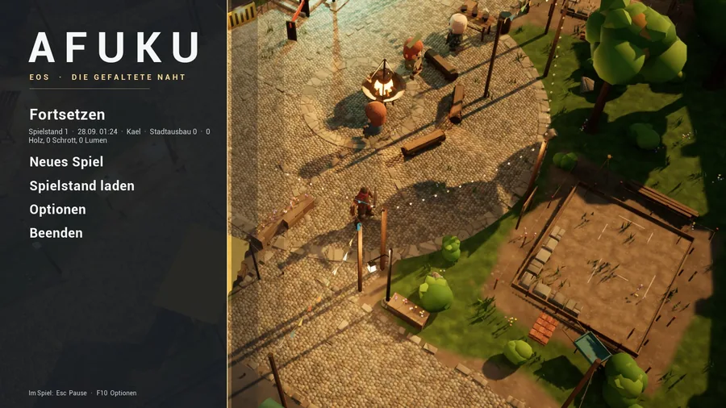
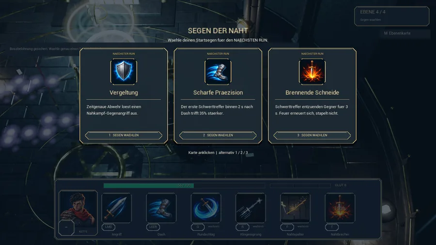
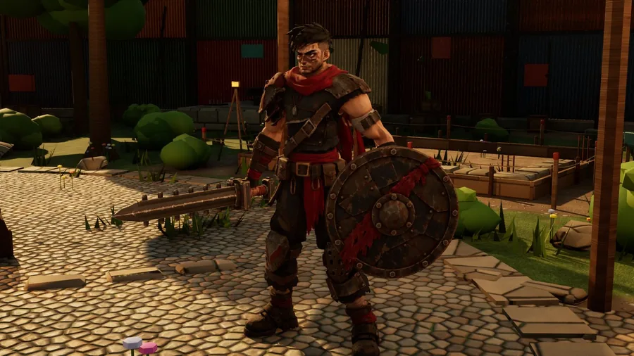

Projekt 7 von 7 · Aleks Paramonov
Afuku
Actionspiel für den PC in Unreal Engine 5
in Entwicklung
- Status
-
- Kein öffentlicher Download.
- Die Entwicklungsfassung läuft bisher nur intern.
- Zeitraum
- seit 09/2026
- Online
- nicht öffentlich
- Mein Anteil
- Zu zweit entwickelt, beide mit Coding-Agenten. Mein Teil: Projektleitung und Entscheidungen, der Dungeon mit Gegnern und Bossen, das heutige Aussehen der Hauptfigur samt Kombos und Fähigkeiten, dazu der Neubau der Stadt Eos. Die Kampfbewegungen stammen aus einem Animationspaket von Epic. An der Außenwelt haben beide gebaut, zuletzt vor allem der zweite Entwickler.
Afuku, Entwicklungsfassung


Was es tut
Afuku richtet sich an Leute, die Spiele wie Hades mögen: Man spielt den Schwertkämpfer Kael und sieht ihn von schräg oben. Kael schlägt mit dem Schwert, weicht aus und setzt Fähigkeiten ein, zum Beispiel einen Wirbel oder einen weiten Sprung mit Einschlag. Aus der Stadt Eos steigt man durch ein Portal in einen Dungeon hinab und kämpft sich Raum für Raum bis zum Boss der Ebene. Nach dem Boss wählt man einen von drei Segen als Verstärkung, und wer stirbt oder heimkehrt, landet wieder in der Stadt und startet neu.
Dungeon Ein Gewölbe aus vielen Räumen voller Gegner.
Was es schon gibt
Agenten arbeiten über MCP-Server direkt in Unreal und Blender
Die Coding-Agenten greifen über MCP-Server auf den Unreal-Editor und auf Blender zu und schreiben Python-Skripte für Blender. MCP ist eine Schnittstelle, über die KI-Agenten Programme bedienen. So entstehen Levels, Gegner und 3D-Modelle per Skript. Am 27.09.2026 habe ich die Stadt Eos neu bauen lassen: 61 Modellteile und 15 Textursätze, alle per Skript in Blender. Neben eigenen 3D-Modellen nutzt das Spiel auch fertige Grafikpakete.
Eine Stadt und vier Dungeon-Ebenen
Es gibt die Stadt Eos als Ausgangspunkt und vier Dungeon-Ebenen, jede mit einem Thema und einem Boss am Ende. Dazu kommen 322 automatisierte Tests für die Spielregeln im gemeinsamen Projekt. Laut Projekt-Audit vom 10.11.2026 läuft das alles technisch, durchgespielt hat den aktuellen Stand aber noch kein Mensch. Am selben Tag habe ich den Kern für die nächsten acht Wochen festgelegt: die Stadt Eos, Ebene 1 und ein Boss, für einen Spieler.
Afuku, EntwicklungsfassungTestlauf


Afuku


Technik
Unreal Engine 5, C++, Blender mit Python-Skripten, MCP-Server, Git